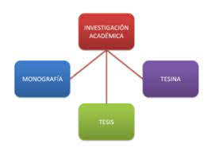
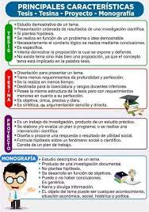

Construccion y caracteristicas tesis, tesina y Articulo cientifico.
¿Qué es una tesis?
Una tesis es el inicio de un texto argumentativo, una afirmación cuya veracidad ha sido argumentada, demostrada o justificada de alguna manera.
En el ámbito académico, una tesis se define como un documento que presenta los resultados de una investigación original y rigurosa llevada a cabo por un estudiante en el marco de un programa de estudios de posgrado. Este documento tiene como objetivo principal demostrar la capacidad del estudiante para realizar una investigación autónoma, original y relevante en su área de conocimiento.
La tesis se desarrolla a lo largo de un proceso riguroso de investigación y tiene como objetivo principal demostrar la capacidad del estudiante para realizar una investigación rigurosa y original, así como para presentar y defender sus ideas de manera clara y coherente. Para ello, es necesario seguir un proceso riguroso de investigación, que incluye la definición del problema a investigar, la revisión de la literatura existente sobre el tema, la elección de la metodología y técnicas de investigación adecuadas, y la interpretación y análisis de los resultados obtenidos.
Características de una tesis
Una de las características fundamentales de una tesis es su conclusión clara, precisa y sin ambigüedades. La conclusión de una tesis debe ser el resultado de un análisis detallado y riguroso de la investigación llevada a cabo, y debe ofrecer una respuesta concreta a la pregunta de investigación planteada al principio
Otra característica importante es tener en cuenta que una tesis no es una simple opinión personal, sino que se basa en una investigación científica. Esto implica que los datos, resultados y conclusiones que se presentan en la tesis deben estar respaldados por evidencia sólida y fiable, y deben ser susceptibles de ser comprobados y verificados por otros investigadores.
¿Cómo se construye una tesis?
La estructura de una tesis varía dependiendo de la disciplina y las normas de la institución, pero en general suele incluir
una introducción que presenta el problema de investigación y los objetivos del estudio, una revisión crítica de la literatura
existente, un marco teórico que fundamenta la investigación, una metodología detallada que describe los procedimientos
utilizados para la recolección y análisis de los datos, los resultados de la investigación, una discusión crítica de los
resultados y sus implicancias, y una conclusión que sintetiza los hallazgos y plantea posibles vías de investigación futura.
También podría ser:
- Primera parte:
- Portada
- Resumen
- Agradecimientos
- índice
- Abreviaturas
- Segunda Parte:
- Introducción
- Metodología
- Resultados
- Conclusiones
- Tercera Parte:
- Bibliografía y apéndice
- Presentación final
- Defensa oral
¿Qué es una tesina?
La tesina es un escrito monográfico, lo que quiere decir que es un estudio de un tema que se realiza de una forma concreta.
El objetivo de este escrito es demostrar que el estudiante conoce lo suficiente de un tema en particular y puede comunicar sus conocimientos de una forma coherente y clara.
También se podría decir que es como una prueba para verificar que el estudiante ha aprendido lo que se esperaba de él en dicha área de estudio.
Para que este escrito sea aprobado, el estudiante debe trabajar con un asesor y presentarlo ante un grupo de especialistas en el tema. Esto implica una defensa oral y pública para obtener dicha aprobación.
Para finalizar con lo anterior mencionado, para que la tesina sea aceptable es importante que se tenga la información más reciente y suficiente sobre el tema. También debe de tener una argumentación detallada, clara y que no contenga errores de sintaxis o faltas de ortografía.
La tesina es un estudio específico sobre un tema para demostrar los conocimientos del estudiante. Requiere la guía de un asesor y una defensa oral ante un grupo de especialistas para ser aprobada. Es importante tener información actualizada y una argumentación clara sin errores.
Características o cualidades de una tesina
Con la información anterior podemos concluir con las siguientes características
- Dependiendo de la intención del autor la tesina puede expresarse por medio de varias técnicas narrativas.
- Es una investigación de carácter monográfico y de compilación.
- Sin importar el enfoque es importante establecer un tema central que guie todo el escrito.
- El recorrido del escrito debe de estar ordenado según la importancia de la información y debe de ser coherente.
- El escrito deberá ser defendido de forma oral.
¿Cómo se construye una tesina?
- Portada.
- Nombre y logo de la institución.
- El título del trabajo, sin escribir la palabra “título” o “tema”.
- La frase: Tesis presentada para cumplir con los requisitos finales para la obtención del título de [...].
- Autor: su nombre y apellido.
- Tutor: su nombre y apellido precedido por la palabra “Prof.”
- Fecha. Solamente mes y año.
- Epígrafe, dedicatoria.
- Índice de la tesina.
- Resumen.
- Introducción.
- Cuerpo del trabajo.
- Marco teórico.
- Metodología.
- Análisis de Resultados.
- Fase Final
- Conclusiones.
- Recomendaciones.
- Anexos.
- Bibliografía.
¿Qué es un artículo científico?
El artículo científico se define como un informe escrito y publicado que describe resultados originales de una investigación, se escribe para otros no para el autor.
Los artículos científicos son informes originales que presentan y describen resultados experimentales, nuevos conocimientos o experiencias basadas en hechos conocidos. Es decir, es una forma de aportar tus descubrimientos a estudiantes, científicos, investigadores y médicos para contribuir al desarrollo de la ciencia.
El artículo científico informa de los resultados de una investigación y ha de seguir, por tanto, una estructura normalizada de manuscrito científico, de acuerdo a un estándar de escritura científica, que es preciso seguir en todos sus aspectos, tanto en lo que respecta a la estructura como al contenido y referencias
¿Cómo se estructura un artículo científico?
- Título
- Autor/autores
- Resumen (Abstract)
- Introducción
- Materiales y métodos
- Resultados.
- Discusión
- tema.
- Reconocimientos
- Referencias o literatura citada
- Método AIMRAD
- (D)iscusión
- Modelo IRDAM
- Modelo IMRAD
- (R)esumen.
|
|
|
|---|---|
|  |  |